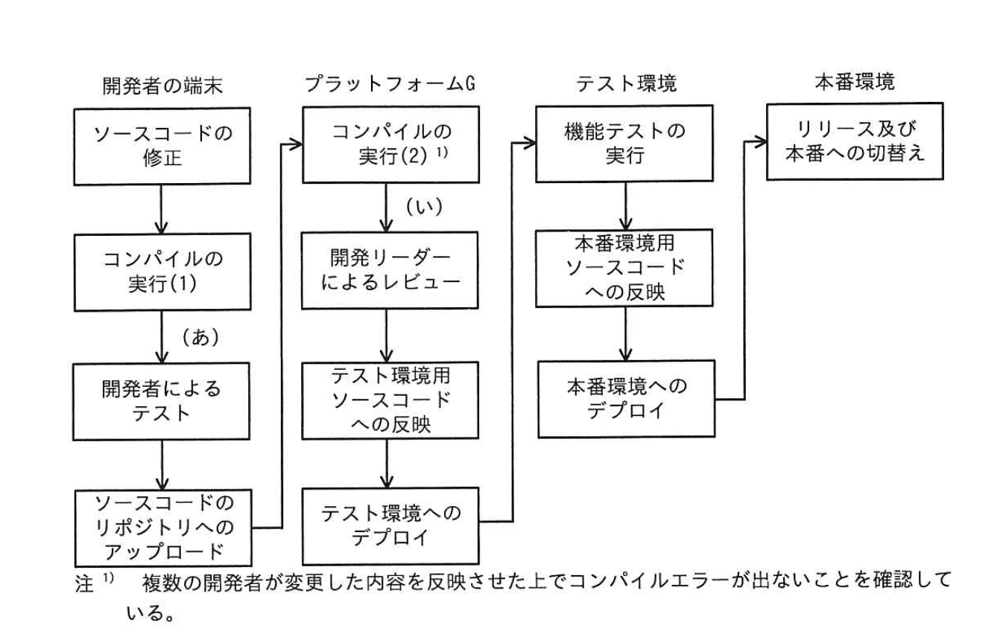

問1 サプライチェーンのリスク対策
L 社は、金融業向けにシステムを開発している従業員1,000名の企業である。L社のシステム開発プロジェクトでは、プラットフォームGというソフトウェア開発プラットフォームを利用している。プラットフォームGの機能には、ソースコード及び開発ドキュメントのバージョンを管理する機能，CI/CD パイプラインの管理機能，開発対象のSBOM 作成機能がある。CI/CD パイプラインの管理機能を利用してテストやリリースの自動実行が可能である。開発対象の SBOM 作成機能はプラットフォームG上のリポジトリサーバ内のソースコード及びライブラリをシステム構成要素として一覧化する。開発対象の SBOM 作成機能は現状では特に利用していない。また，L社が採用している SAST ツール（以下，ツールFという）は、プラットフォームG上のリポジトリサーバや開発者の端末にインストールして利用するツールであり、コンパイルエラーが解消されたソースコードに対してだけ正常な検査が可能である。プラットフォームGのCI/CDパイプラインの管理機能で、ツールFでのチェックを自動的に行うようなワークフローを構成することができる。 近年，業務委託先でのセキュリティ侵害に起因する情報セキュリティインシデントが大きく報道されるなど外部環境が変化し、L社経営陣もサプライチェーンリスク対策の強化を考えるようになった。経営陣の指示で、情報セキュリティ担当のBさんは，サプライチェーンリスク対策を強化したセキュリティガイドライン（以下、ガイドラインという）を作成し、全てのシステム開発プロジェクト及び運用サービスを点検することになった。Bさんは、L社が契約しているセキュリティコンサルタントで情報処理安全確保支援士（登録セキスペ）のD氏にガイドラインの作成について相談することにした。
[ガイドラインの作成] 次は、ガイドラインの作成についてのBさんとD氏の会話である。
- Bさん
- ガイドラインはどのような構成がよいでしょうか。
- D氏
- システムライフサイクルの工程に合わせるのがよいでしょう。L社のシステム開発業務を踏まえて、調達、開発、リリース・デプロイ，運用の工程に分類し、さらに全ての工程で共通するような項目も抜き出して記載しましよう。
Bさんは、ガイドライン案を表1のように作成した。
| 工程 | 項番 | 内容 |
|---|---|---|
| 共通 | 1 | システムに関連する情報資産を，業務委託先と共同で利用するものも含めて一覧化し、管理すること。一覧化すべき情報資産は、次のとおりである。 ・サーバ ・ネットワーク機器 ・ソースコード ・リポジトリ内のライブラリ |
| 2 | 各工程で利用するシステムのアカウントは、業務委託先を含めて必要な利用者にだけ発行すること。その際、責任追跡性を確保するためにアカウントの利用者を特定できるようにすること | |
| 3 | 一覧化した情報資産ごとに、パッチ適用状況など最新の構成情報を把握すること | |
| 調達 | 4 | 業務委託先の企業を、再委託先まで含めて一覧として管理すること |
| 5 | 業務委託先でのセキュリティ管理に関する要件を、業務委託先との契約に含めること | |
| 開発 | 6 | ソフトウェア開発プラットフォームなどの開発環境は、アクセス制御を行い，必要な利用者だけがアクセスできるようにすること |
| 7 | 開発環境にアクセスしたアカウントを特定できるようにアクセスログを記録すること | |
| 8 | 開発したソフトウェアのソースコードは、人手によるレビュー及びSASTツールによるチェックを行うこと | |
| 9 | システムの仕様，機能を精査し、不要な機能やセキュリティ上の欠陥がないことを設計書から確認すること | |
| リリース・デプロイ | 10 | 開発したソフトウェアのSBOMを作成すること |
| 11 | リリースしたソフトウェアは、リリースバージョンを管理すること | |
| 12 | システムの稼働環境において，稼働状況を監視すること | |
| 運用 | 13 | システムの稼働環境において、要件に応じたアクセス制御を実施すること |
| 14 | システムの運用端末がある部屋は、要件に応じた入退室管理を実施すること | |
| 15 | インシデント対応手順書を作成すること |
次は、ガイドライン案についてのBさんとD氏の会話である。
- Bさん
- ①セキュリティ・バイ・デザインの考え方を一部取り入れました。その他，留意すべき点などはありますか。
- D氏
- 項番 5には、②業務委託先が再委託を行う場合に備えて、L社と業務委託先D氏との間の契約書に明記すべき事項を具体的に示しておくとよいでしょ
Bさんが修正したガイドライン案を経営陣に報告したところ、過去に外部ベンダーでのセキュリティ侵害に起因してL社でインシデントが何度か発生したことがあったので、それらのインシデントに対するガイドライン案の有効性を評価するように指示があった。
[過去のインシデントの確認] Bさんは、過去のインシデントに対するガイドライン案の有効性を評価することにした。次は、1件目のインシデントについてのD氏とBさんの会話である。
- D氏
- はじめに、インシデントの内容を確認しておきましょう。
- Bさん
- L社が開発し，運用していたシステム（以下、システム◎という）では、古い WebブラウザをサポートするためのJavaScript（以下、スクリプトPという）を利用していました。スクリプトPは、広く使われていたT社製のものです。スクリプトPは、T社が運営するサーバ（以下、サーバTという）に配置され、システムQにアクセスした Web ブラウザがスクリプトPを都度読み込むようにシステムQは構成されていました。ある日、サーバTが乗っ取られてしまい，スクリプトPが改ざんされたことによって、システムQへの利用者のアクセスが悪意のあるWebサイトにリダイレクトされてしまいました。
- D氏
- 発見の経緯を教えてください。
- Bさん
- システムQの利用者からの問合せで気付き、対策を実施しました。時の情報セキュリティ担当は、サーバTが侵害されたというニュースは知っていましたが、システムへのアクセスが影響を受けることを把握していませんでした。
- D氏
- 他社の発表によると、③スクリプトPを利用していたシステムでもスクリプトPの配置方法が違えば、影響を受けなかったようですね。
- Bさん
- はい。違う配置方法にするという対策もありました。しかし、Web ブラウザ開発元での古い Web ブラウザの公式サポートが終了していたことから、当社の対策としては、④システムのソースコードに変更を加えて、古い Webブラウザのサポートを終了しました。
- D氏
- 1件目のインシデントについてはおおむね理解できました。
- Bさん
- 案の項番10が、1件目のインシデントを未然に防ぐために有効ではありませんか。
- D氏
- いいえ、開発対象の SBOM作成機能でSBOMを作成していたとしても、スクリプトPはSBOMに含まれないので，インシデントは防げなかったでしょう。
Bさんは、⑤SBOM以外の手段で、システムが利用している外部のスクリプトを把握できるよう、案の項目を一つ修正した。D氏とともに、そのほかの過去のインシデントについても案を評価したところ、案は有効であると確認できたので、経営陣に報告して承認を得た。
[ガイドラインを用いた点検の実施］ ガイドラインを用いて、現在進行中の全てのシステム開発プロジェクト及び運用サービスを点検することになった。最初の点検対象は、システムSの開発プロジェクト及び運用サービスである。Bさんがプロジェクト計画書、運用計画書などからまとめたシステムSの開発プロジェクト及び運用サービスの概要を図1に、開発環境の構成図を図2に示す。
1.システムSは、L社が3年前からS銀行向けに提供しているインターネットバンキングシステムである。運用と追加機能の開発を社が請け負っている。
2．セキュリティ監視を情報セキュリティ会社のN社に委託している。開発は、L社従業員，社に派遣された派遣エンジニア及び他の業務委託先の従業員が行っている。なお、運用ツールなど一部のソフトウェアはN社が開発することがある。
3．L社がシステムSを運用するためにS銀行内にセキュアルームが用意されている。セキュアルームへの入室にS銀行が貸与するカードでの認証を必須とする入退室装置が導入され、S 銀行の管理者及びL社の運用担当者しか入室できないようになっている。
4.派遣元及び業務委託先との間では、L社のセキュリティポリシーの順守とプロジェクトでのセキュリティルールの順守について契約書で定めている。N社の業務委託契約には、N社内のセキュリティ管理についての実施事項及びN社が再委託を行わないことを明記している。N社での委託契約の順守状況を定期的な監査によって確認する。
5.開発時に、要件定義段階での脅威モデリング及び設計段階での設計書の確認を行い、不要な機能やセキュリティ上の欠陥がないことを確認する。
6.プラットフォームGに設計書を格納する。開発したソフトウェアのSBOMは作成しない。
7.開発したソフトウェアのソースコードは、開発リーダーがレビューして承認する。開発したソフトウェアをリリースする際は、開発リーダーがリリースバージョンを更新する。
8．資産管理台帳にサーバ及びネットワーク機器の一覧を担当者が入力する。
9.システムSに組み込む OSSライブラリは、開発者が取得する。OSS ライブラリは資産管理台帳に入力しない。
10．開発は、L社内及びオフショア拠点で行い，次のLANに接続した端末で実施する。
・L社内に用意した従業員 LAN・L社内に用意したパートナーLAN・オフショア拠点にある業務委託先の LANまた、テストなどのためにシステム Sの開発系サーバがある LAN（以下、開発LANという）にアクセスする際には一旦，踏み台サーバにログインする。踏み台サーバには、L社，業務委託先など会社ごとに発行した共用アカウントでログインするが、ログインごとに、利用記録簿に記載する。開発LAN 上のサーバには製品仕様上、アクセスログが取れないものもある。
11.インシデント発生時にL社のシステムSの担者に連絡するための業務フローがインシデント対応手順書に定められており、システムSの担当者がインシデントのハンドリングを行う。
12.ツールFが開発者の端末とプラットフォームGにインストールされている。

図2 システムSの開発環境の構成図（抜粋）
Bさんは、システム Sの担当者へのヒアリング前に論点を整理しておこうと考え、表1の各項番について、図1に基づき、対策状況を確認した。結果は表2のとおりである。
| 工程 | 表1の項番 | 確認した図1の項番 | 確認結果１又は問題点 |
|---|---|---|---|
| 共通 | 1 | 8, 9 | OSSライブラリを台帳管理していない。 |
| 2 | [ア] | [a] | |
| 調達 | 5 | [イ] | 問題なし。 |
| 開発 | 9 | [ウ] | [b] |
| リリース・デプロイ | 10 | 6 | 開発したソフトウェアについてSBOMを作成していない。 |
| 運用 | 15 | [エ] | [c] |
Bさんは，システムの担当者であるCさんにヒアリングを行った。
[SBOM についての確認] 次は、表1の項番 10についてのCさんとBさんの会話である。
- Cさん
- システム Sのソフトウェア構成は設計書で把握できると考えていますが、SBOMの作成も必要でしょうか。
- Bさん
- SBOMを利用すると、⑥将来、弱性管理がしやすくなります。プラットフオームGで作成することができます。
- Cさん
- なるほど。それでは、SBOMの作成を検討します。
[開発工程のセキュリティ対策についての確認] Bさんは、表1の項番7,8について確認した。次は、そのときのBさんとGさんの会話である。
- Bさん
- 表1の項番7の対策は実施できていますか。
- Cさん
- オフショア拠点から開発 LAN へのアクセスについては VPN-GW でアクセスログを取得できているものの、社内からのアクセスについては取得できていません。
- Bさん
- アクセスログは図2中の[d]で取得するのがよいでしょう。
- Cさん
- 分かりました。
- Bさん
- 表1の項番8の対策はどのようにしていますか。
- Cさん
- 現在はソースコードの変更内容を開発リーダーがレビューしています。
- Bさん
- 開発リーダーによるレビューに加えて、ツールFでチェックするのがよいでしょう。
- Cさん
- 開発フローのどこでツールFを実行するのがよいでしょうか。
- Bさん
- ツールFの特性を踏まえると、図3のシステムSの開発フロー中の（あ）又は（い）で実行するのがよいと考えられます。⑦それぞれ利点が異なります。

図3 システムSの開発フロー
ソースコードのテスト環境へのリポジトリへのデプロイアップロード注 1）複数の開発者が変更した内容を反映させた上でコンパイルエラーが出ないことを確認している。 図3 システムSの開発フロー
ガイドラインを用いた点検の後，L社のサプライチェーンリスク対策は強化された。
設問1[ガイドラインの作成]について答えよ。 （1） 本文中の下線①について、どのような考え方か答えよ。 （2） 本文中の下線②について、明記すべき事項を、50字以内で答えよ。
設問2 [過去のインシデントの確認］について答えよ。 （1） 本文中の下線③について、影響を受けない配置方法を答えよ。 （2） 本文中の下線④について、加えた変更を、具体的に答えよ。 （3） 本文中の下線⑤について、修正した項番と修正内容を答えよ。
設問3 [ガイドラインを用いた点検の実施]について答えよ。 （1） 表中の[ア]〜[エ]に入れる適切な項番を答えよ。 （2） 表2中の[a]〜[c]に入れる適切な字句を答えよ。
設問4 本文中の下線⑥について，脆弱性管理がしやすくなる理由を，具体的に答えよ。
設問5[開発工程のセキュリティ対策についての確認]について答えよ。 （1） 本文中の[d]に入れる適切な字句を、図2中の名称で答えよ。 （2） 本文中の下線⑦について、（あ），（い）で実行する利点を、それぞれ40字以内で答えよ。
問1 サプライチェーンのリスク対策
設問1(1)
解答例
企画・設計工程からセキュリティ対策を組み込むという考え方
セキュリティ・バイ・デザインとは、企画・設計という上流工程からセキュリティ要件・対策を組み込む設計思想。後工程で発見した脆弱性の修正コストは上流対策の数十倍以上になるとされる（NISTの試算）。本問では表1の項番9「不要な機能やセキュリティ上の欠陥がないことを設計書から確認すること」がこれを具体化した項目。シフトレフト・DevSecOpsとも密接に関連し、IPAの「セキュア・バイ・デザインの取組の手引き」でも詳述されている。設問では「どの工程に組み込むか」という点（企画・設計段階）が答えの核であり、「実装後にテストで検出する」考え方（テスト・バイ・デザイン）と明確に区別すること。
設問1(2)
解答例
L社の業務委託先に要求する対策と同等のセキュリティ対策を再委託先にも要求させること
サプライチェーン攻撃は「直接の委託先」ではなく「再委託先（孫請け）」が侵害起点となるケースが多い。表1の項番5（業務委託先との契約にセキュリティ要件を含める）だけでは再委託先には適用されない。解答の2要素は①「業務委託先が再委託を行う場合」という条件と②「L社が業務委託先に要求する対策と同等のセキュリティ対策を再委託先にも課すこと」。これを「フロー・ダウン（flow-down）要件」と呼ぶ。50字制限内で「再委託先」「L社との契約と同等の対策を要求する」の2点を含めることが採点の鍵。ISMSやCMMC、NIST SP 800-161（サプライチェーンリスク管理）でも供給業者管理として必須要件とされている。
設問2(1)
解答例
スクリプトPをダウンロードしておき、システムQのサーバ上に配置する方法
本インシデントの原因は、スクリプトPの実体がT社サーバに置かれ、システムQがそれを毎回動的に読み込む設計（外部スクリプト参照）にあった。T社サーバが乗っ取られると参照しているすべてのサイトに即時影響が波及する（Magecart型攻撃と同じ構造）。影響を受けない配置方法は「スクリプトPをシステムQのサーバ自身にコピーして配置（セルフホスト）」すること。外部サーバへの依存を断ち切るため、T社サーバが侵害されても自サーバのファイルはそのまま。補足：外部スクリプトを使い続ける場合はSRI（Subresource Integrity：integrity属性にハッシュ値を指定）で改ざん検知も可能だが、本問の解答の核はセルフホスト。
設問2(2)
解答例
スクリプトPを読み込む箇所をソースコードから削除する
本文の対処方針は「古いWebブラウザのサポートを終了する」こと（会話文中に明記）。スクリプトPはレガシーブラウザ向けpolyfillであり、Webブラウザ開発元の公式サポート終了を受けてサポート不要となった。ソースコードへの変更は「スクリプトPを読み込むscriptタグをHTMLから完全に削除する」こと。単にURLをコメントアウトするだけや、配置先を自サーバに変更する（設問2(1)の対策）だけでは答えとして不十分。「古いWebブラウザのサポート終了」という方針が変更の根拠であり、「参照自体をなくす」ことが変更内容である点を明確に答えること。
設問2(3)
解答例
項番：1d 修正内容：連携している外部サービスを管理対象に含める
D氏が「SBOMでは防げなかった」と指摘した理由：プラットフォームGのSBOM作成機能は「リポジトリサーバ内のソースコード及びライブラリ」を対象とするが、外部サーバから動的に読み込む外部スクリプト（CDN参照）はリポジトリに含まれないためSBOMに現れない。対策として修正すべきは表1の項番1（情報資産の一覧化対象リスト）に「システムが依存する外部サービス（外部スクリプト等）」を追加すること。これにより、T社サーバへの依存が管理台帳に記録され、T社侵害ニュースが届いた際に自社への影響を即座に確認できる体制が整う。解答の骨格は「項番1を修正し、管理対象に外部サービスとの依存関係を加える」。
設問3(1)
解答例
ア＝10 イ＝4 ウ＝5 エ＝11
各空欄の根拠：[ア]（表1の項番2「責任追跡性の確保」の確認対象）→図1の項番10に「踏み台サーバへのログインは会社ごとに発行した共用アカウントを使用」とあり、個人特定が困難な状況を示す唯一の記述→[ア]=10。[イ]（表1の項番5「業務委託先との契約にセキュリティ要件を含める」の確認対象）→図1の項番4にN社業務委託契約に「実施事項及び再委託を行わないこと」を明記とある→[イ]=4。[ウ]（表1の項番9「設計書からセキュリティ上の欠陥確認」の確認対象）→図1の項番5に「要件定義段階での脅威モデリング及び設計段階での設計書確認」を実施と記載→[ウ]=5。[エ]（表1の項番15「インシデント対応手順書」の確認対象）→図1の項番11にインシデント対応手順書が定められていると記載→[エ]=11。
設問3(2)
解答例
a＝開発環境の踏み台サーバで共用アカウントを利用している b＝問題なし c＝問題なし
[a]（表1の項番2「アカウントの利用者を特定できるようにすること」の確認結果）：図1の項番10より踏み台サーバのログインは「会社ごとに発行した共用アカウント」を使用。共用アカウントでは操作ログが残っても「誰が操作したか」を特定できず責任追跡性が担保されない。利用記録簿への記載も代替手段として不十分（簿自体の改ざんリスクがある）。[b]（表1の項番9「設計書からセキュリティ上の欠陥確認」の確認結果）：図1の項番5で脅威モデリングと設計書確認が実施されており問題なし。[c]（表1の項番15「インシデント対応手順書」の確認結果）：図1の項番11でインシデント対応手順書が整備・運用されており問題なし。b・cは現状でガイドライン要件を満たしているため指摘事項なし。
設問4
解答例
利用しているソフトウェアやそのバージョンが明確になり、脆弱性の影響有無を容易に把握できるから
SBOM（Software Bill of Materials：ソフトウェア部品表）は、システムに含まれる全コンポーネント（OSS・ミドルウェア・ライブラリ）とそのバージョンを一覧化したもの。CVEが公開されると影響する「製品名・バージョン」が判明するため、SBOMと照合することで自社システムが対象コンポーネントを含むかどうかを即座に特定できる。SBOMがなければ全ソースコードを手動確認する必要があり膨大な工数がかかる。本問ではCさんが「設計書で把握できる」と述べているが、設計書は開発当初の情報であり追加・変更されたライブラリを反映しない。プラットフォームGのSBOM作成機能（リポジトリ内ソースコード・ライブラリを一覧化する機能）を使えば継続的に最新状態を維持できる点もSBOMの利点。「コンポーネントとバージョンが明確→CVE公開時に影響有無を迅速確認」が解答の核。
設問5(1)
解答例
踏み台サーバ
表1の項番7「開発環境にアクセスしたアカウントを特定できるようにアクセスログを記録すること」の対策として適切なサーバを問う問題。本文の会話でCさんは「オフショア拠点からのアクセスはVPN-GWでログ取得済みだが、社内からのアクセスは取得できていない」と回答。図2（開発環境構成図）では、社内LANから開発LANへのアクセスは必ず踏み台サーバを経由する構成。踏み台サーバは社内からの全アクセスが集中する中継点であるため、ここでアクセスログを取得することで一元的に記録できる。開発LAN上のサーバは「製品仕様上アクセスログが取れないものもある」（図1の項番10）という制約があるため、踏み台サーバでのログ取得が唯一の現実的な解。図2の名称で答えることに注意。
設問5(2)(あ)
解答例
ツールFで検知できるエラーをより早く発見することができる
図3の（あ）は開発者の端末でコンパイルが通った後、リポジトリへのコミット・プッシュ前の段階。ツールFの特性（「コンパイルエラーが解消されたソースコードに対してだけ正常な検査が可能」）を踏まえると、開発者PCでコンパイルが通った直後が最適タイミング。（あ）での実行の利点は「開発者が書いたコードに対して即座にフィードバックが得られるため、脆弱性の原因を特定しやすく最も早期に修正できる」こと。他の開発者のコードとマージ前なので修正範囲が局所的な点も利点。40字以内では「早期発見・早期修正ができ開発者への影響が少ない」という点を含めること。（い）との対比：（あ）は速度・早期発見が利点、（い）は自動化・全網羅が利点というトレードオフを理解しておくと解答しやすい。
設問5(2)(い)
解答例
CI/CDパイプラインの管理機能を使って自動実行することができる
図3の（い）はCI/CDパイプラインにおいてビルド・テストを行う段階（注1より「複数の開発者が変更した内容を反映させた上でコンパイルエラーが出ないことを確認している」工程）。プラットフォームGのCI/CD管理機能を使ってツールFのチェックをワークフローに組み込める（本文に「ワークフローを構成することができる」と明記）。（い）での実行の利点は「CI/CDパイプラインに組み込むことで全開発者のコードに対して漏れなく自動的にSASTチェックが実行され、手動実行の抜け漏れをなくせる」こと。（あ）との違い：（あ）は開発者が自発的に実行するため漏れる可能性があるが、（い）はパイプライン通過の強制関門となり必ず実行される。また複数開発者のコードをマージした状態での検査となるため、統合後の問題も検出できる点も補足的利点。